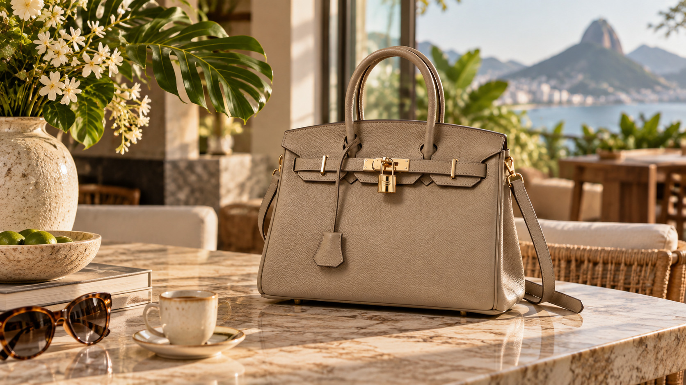
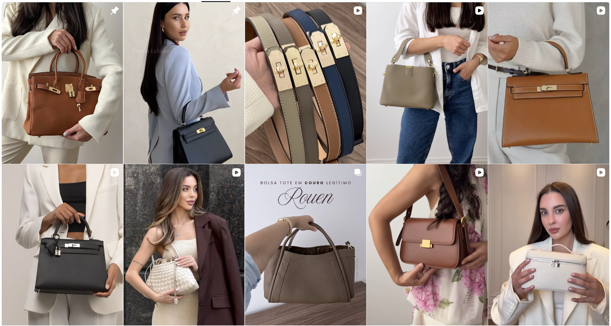
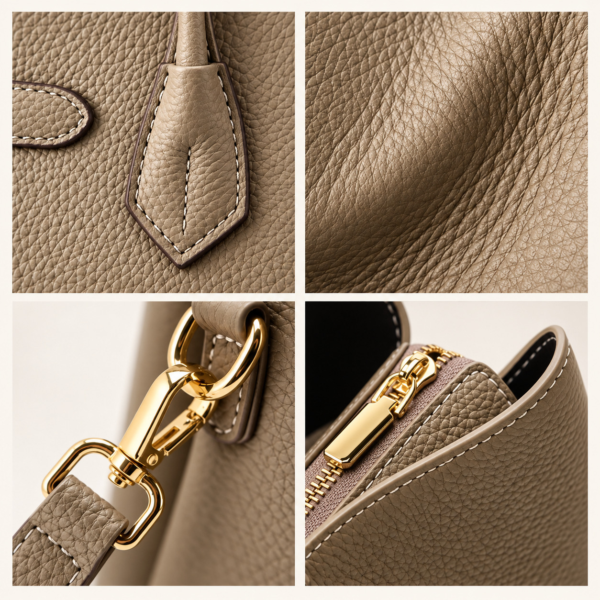
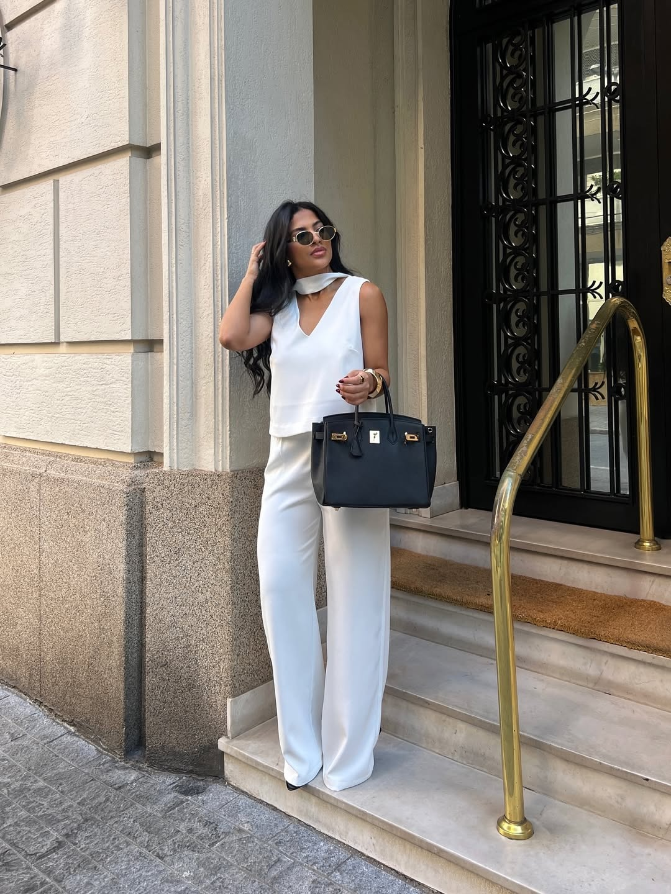

Durante décadas, ter uma bolsa de couro com acabamento sofisticado, ferragens elegantes e design atemporal quase sempre significou uma coisa: pagar caro.
Em algumas das grandes grifes internacionais, não é difícil encontrar bolsas custando vários milhares de reais.
Mas uma marca brasileira resolveu apostar em outro caminho.
A Emma Leblanc vem chamando atenção ao oferecer bolsas produzidas em couro legítimo, com linhas inspiradas na estética clássica do mercado de luxo, mas com preços muito mais acessíveis.
E a proposta parece ter encontrado exatamente o público que procurava por isso.

O “luxo discreto” virou desejo entre mulheres que preferem elegância sem logotipos enormes
Nos últimos anos, uma mudança vem acontecendo na moda.
Em vez de peças extremamente chamativas, muitas mulheres passaram a procurar bolsas com aparência mais discreta: couro, cores neutras, ferragens delicadas e formatos que continuam elegantes mesmo depois que uma tendência passa.
É o chamado luxo discreto.
E foi justamente nessa proposta que a Emma Leblanc encontrou espaço.
Ao navegar pela coleção da marca, aparecem modelos estruturados, bolsas minimalistas, versões em formato bucket, modelos clássicos de mão e bolsas transversais — muitas delas produzidas em couro legítimo.
A diferença está principalmente no preço.
Enquanto uma bolsa de uma grande marca internacional pode facilmente ultrapassar vários milhares de reais, modelos em couro legítimo da Emma Leblanc podem ser encontrados por valores abaixo de R$1.000.

Couro legítimo, acabamento sofisticado e preço que surpreende
À primeira vista, algumas bolsas poderiam facilmente ser confundidas com peças de uma categoria muito mais cara.
Mas não é apenas uma questão de aparência.
Diversos modelos da coleção são produzidos em couro legítimo e combinam detalhes como ferragens com acabamento dourado ou prateado, alças removíveis e formatos clássicos.
É uma proposta simples:
Isso também explica por que alguns modelos acabam desaparecendo rapidamente da coleção.
Bolsas como as linhas Classic, por exemplo, já aparecem em determinadas versões como esgotadas no próprio site da marca.
E para quem encontra uma combinação específica de modelo, cor e ferragem que gosta, esse detalhe faz diferença.
“Eu não quero uma bolsa com uma marca enorme. Quero uma bolsa bonita.”
Essa parece ser uma das razões para o crescimento desse tipo de produto.
Existe um grupo cada vez maior de consumidoras que não está necessariamente procurando exibir uma logomarca.
Elas querem uma bolsa que combine com praticamente tudo.
Que possa ser usada no trabalho.
Em um almoço.
Durante uma viagem.
Ou até em uma ocasião mais elegante.
E, principalmente, que continue bonita depois de anos.
É exatamente aí que materiais como o couro legítimo e designs mais clássicos ganham vantagem sobre peças extremamente ligadas a uma tendência específica.

Alguns dos modelos mais procurados já ficam indisponíveis em determinadas versões
Esse é um ponto importante para quem está pensando em comprar.
A Emma Leblanc trabalha com diferentes combinações de modelo, tamanho, cor e acabamento das ferragens.
Por isso, a disponibilidade não é igual para todas as versões.
Algumas bolsas em couro legítimo já aparecem como esgotadas, enquanto outras continuam disponíveis.
Na prática, isso significa que deixar para escolher depois pode significar não encontrar mais justamente a combinação desejada.
Principalmente nas cores mais fáceis de usar no dia a dia, como preto, caramelo, marrom, fendi e off-white.
A condição atual também reduz bastante a diferença de preço
Além dos valores significativamente abaixo dos praticados pelas grandes grifes, a marca atualmente oferece condições especiais para compras pelo site.
Há frete grátis nas condições informadas pela loja, além de 10% de desconto para pagamento via Pix ou parcelamento em até 6x sem juros.
Para uma bolsa em couro legítimo que provavelmente será usada durante anos, isso coloca alguns dos modelos em uma faixa de preço bastante diferente daquela normalmente associada a acessórios premium.
Mas existe um detalhe importante:
o desconto não adianta muito se a bolsa escolhida estiver esgotada.
Por isso, para quem já estava procurando uma bolsa de couro para usar no dia a dia, trabalho ou viagens, faz sentido pelo menos conferir quais modelos e cores ainda estão disponíveis antes de decidir.

Vale a pena?
Para quem procura apenas uma bolsa barata, provavelmente existem opções mais econômicas.
A proposta aqui é outra.
A Emma Leblanc parece ocupar justamente o espaço entre as bolsas comuns de material sintético e as bolsas de luxo que custam milhares de reais.
Ou seja:
Sem precisar pagar pela etiqueta de uma grande grife.
E talvez seja justamente essa combinação que esteja fazendo tantas mulheres descobrirem a marca.